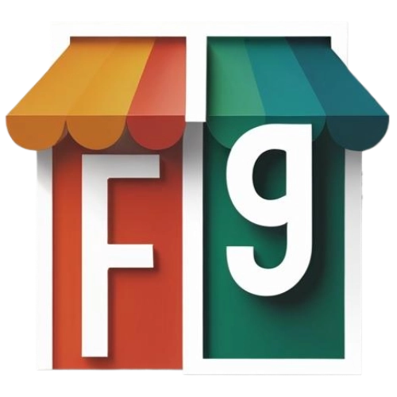

<div class="flex items-center sm:justify-between sticky ">
  <!--LOGO-->
  <div class="my-1 ml-1 mr-2 sm:my-2 sm:ml-2">
    
  </div>
  <!--LOGO-->

  <!--SEARCH INPUT BEGIN-->
  <div class="flex flex-1 max-h-8 max-w-lg mx-2 sm:pl-2 sm:max-h-10 sm:max-w-4xl sm:mx-7">
    <div
      class="flex items-center grow rounded-l-md bg-white text-sm pl-1 sm:pl-3 outline-1 -outline-offset-1 outline-gray-300 has-[input:focus-within]:outline-2 has-[input:focus-within]:-outline-offset-2 has-[input:focus-within]:outline-custom-secondary">

      <input type="text" name="search" id="search"
             class="block min-w-0 grow py-1.5 pr-3 pl-1 text-gray-900 placeholder:text-gray-400 focus:outline-none sm:text-sm/6"
             placeholder="Que estas buscando...">
      <div class="inline-grid shrink-0 grid-cols-1 focus-within:relative">
        <select id="currency" name="currency" aria-label="Currency"
                class="col-start-1 row-start-1 appearance-none  pr-7 pl-3 py-1.5 sm:py-2.5 text-sm text-gray-500 placeholder:text-gray-400 focus:outline-2 focus:-outline-offset-2 focus:outline-custom-secondary">
          <option>CUP</option>
          <option>MLC</option>
          <option>MLC</option>
          <option>USD</option>
          <option>CAD</option>
          <option>EUR</option>
        </select>
        <svg
          class="pointer-events-none col-start-1 row-start-1 mr-2 size-5 self-center justify-self-end text-gray-500 sm:size-4">
          <use xlink:href="./assets/sprites.svg#arrow_down"/>
        </svg>
      </div>
    </div>
    <div class="flex">
      <button type="submit"
              class="flex w-full justify-center items-center rounded-r-md bg-custom-secondary px-3 py-1.5 text-sm/6 font-semibold text-white shadow-xs hover:bg-white hover:text-custom-secondary focus-visible:outline-2 focus-visible:outline-offset-2 focus-visible:bg-custom-secondary">
        <svg class="w-3 hover:w-4 transition-[width] duration-500">
          <use xlink:href="./assets/sprites.svg#search"/>
        </svg>
      </button>
    </div>
  </div>
  <!--SEARCH INPUT END-->

  <!--RIGHT OPTION-->
  <div class="hidden sm:flex">
    <div class="relative">
      <div class="text-custom-secondary mr-1 ml-8">
        <button class="p-1 rounded-full">
          <svg class="w-5 h-5 sm:w-6 sm:h-6 transition-all duration-300">
            <use xlink:href="assets/sprites.svg#cart_shopping"/>
          </svg>
        </button>
      </div>
      @if (showTotalItems()) {
        <span
          class="absolute -top-2 -right-1.5 rounded-full bg-custom-tertiary px-1.5 py-0.5 text-xs font-medium text-white ring-1 ring-white/30 ring-inset">
        {{ totalItems() }}
      </span>
      }

    </div>

    <div class="text-custom-secondary ml-1 mr-4 transition-all duration-300">
      <button class="p-1 rounded-full">
        <svg class="w-5 h-5 sm:w-6 sm:h-6">
          <use xlink:href="assets/sprites.svg#user_login"/>
        </svg>
      </button>
    </div>

  </div>
  <!--RIGHT OPTION END-->


</div>

<nav class="flex items-center sticky top-0 bg-gradient-to-bl from-custom-primary">

</nav>
